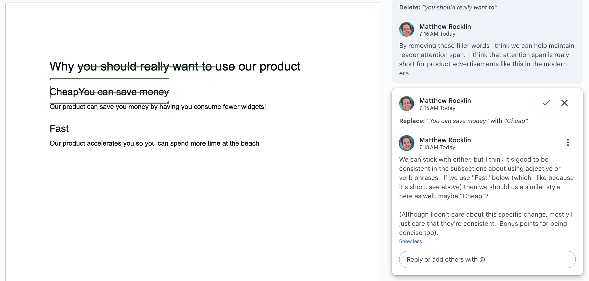
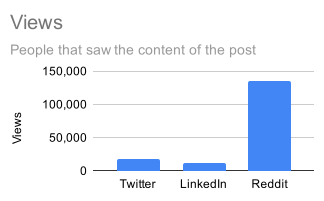
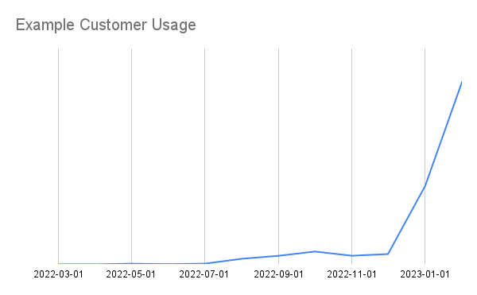

Articles#
How I Almost Quit My Job, and How Being Selfish Saved Me
Every human being has a basic instinct to help each other out
– Mark Watney, The MartianWhat Does Pangeo 2.0 Look Like?
In January 2018 I published a blogpost titled Pangeo: JupyterHub, Dask, and XArray on the Cloud, which introduced a new architecture for running scalable Python computations on the cloud using …

-
We’re moving away from usage based pricing.

How GitHub taught me to Micromanage
Feedback is critical to performing good work as a team. Good feedback cultivates quality work and professional growth. Bad feedback degrades quality and erodes relationships.
-
We’re relaunching our enterprise sales effort after improving product-market fit. However, it’s an interesting challenge finding just the right person. This post goes into a bit of our history, what we’re looking for in an early sales hire, and my experience engaging with this process.
Reddit, Twitter, and LinkedIn Comparison
Historically I mostly used Twitter to broadcast my work. However, Twitter today is less effective than it once was. What’s the best alternative?
-
Making decisions is hard work, even if the decisions are low stakes. As proof consider the following questions from your ordinary life:
-
This article records my experience going through laser corrective eye surgery. Typically folks get LASIK. I got PRK/ASA instead, which is slightly more involved. This will go through the following phases:
-
Feedback is critical for alignment and growth, but really awkward.
-
Where are we on product and GTM? What are some open questions and what should we do to improve?
 -
Interviewing is hard. It’s also important to do well.
Rethinking My Website and Blog
How we read and write shapes how we think
-
No one knows how to do your job. Look for answers from within, not without.
-
HD is the new tall
-
We often optimize more for current users than future users.
-
I cancelled all my regular meetings and logged off of Slack. It has made a huge difference.

-
I love remote work, but sometimes it sucks. Offsites can help.
-
Most startups fail, and yet most CEOs project inevitable success. What gives?
-
After building a successful open source project I then started a company and made many mistakes.
-
We often need to balance prioritization between user-facing work and internal or developer-facing work. It’s helpful to distinguish between these in conversations of prioritization and measuring success.
-
I’ve intentionally shrunk Coiled from 40 to 20 people. This was painful, but we’re moving faster as a result. This article talks a little about the context around this.
-
We just returned from the annual SciPy conference full of energy as usual. This conference is unique because it includes core maintainers from most of the core Python data projects (Jupyter, Pandas, Numpy, Scikit-Learn, Dask, Xarray, Numba, Matplotlib and many more). It’s an accident of history that we all transitioned into software development from scientific careers. It’s a wonderful community of science nerds that unexpectedly changed the world.
-
VC funded startups are weird. They (rightly) care more about valuation than about revenue. Valuation depends on revenue, but only on very certain kinds of revenue.
-
This is a fast blogpost please excuse the brevity.
-
Tech lead is a role for senior engineers that provides some of the leverage of management, while avoiding most of the administrative burden. It’s a fun role. This post talks about some positive behaviors to think about should you find yourself in this role.
-
Common open source software (OSS) / venture capital (VC) metrics are flawed. This surprises no one; metrics are hard.

-
Tweets, like all writing, should respect the reader through brevity and structure.

-
Speaking truth is easy. Getting people to listen is hard.
-
Engineer: Hey Boss, what should I know to more effectively sell our product?
-
Software development is both a highly technical and a highly creative process. Programmers are reasonably proud of their abilities and experience, much in the same way that expert artists or artisans can be proud of their work.
-
I encourage my colleagues to write blogposts more frequently. This is for a few reasons:
-
This post argues for avoiding indirection in community code.
-
What are the expectations and best practices for maintainers of open source software libraries? How can we do this better?
-
I avoid interacting on Slack, especially for technical conversations around open source software. Instead, I encourage colleagues to have technical and design conversations on GitHub, or some other system that is public, permanent, searchable, and cross-referenceable. In the spirit of Don’t Repeat Yourself (DRY) I’m writing up these thoughts as a blogpost.

-
Following up on a post on supporting users in open source this post lists some suggestions on how to ask a maintainer to help you with a problem.
-
The best way you can contribute to an open source project is to remove lines of code from it. We should endeavor to write code that a novice programmer can easily understand without explanation or that a maintainer can understand without significant time investment.
-
honesty is hard
-
Tests are important for community driven open source software. This post contains brief reasons why you should test your code, particularly if you submit changes to existing open source projects.
-
a story of shared abstractions